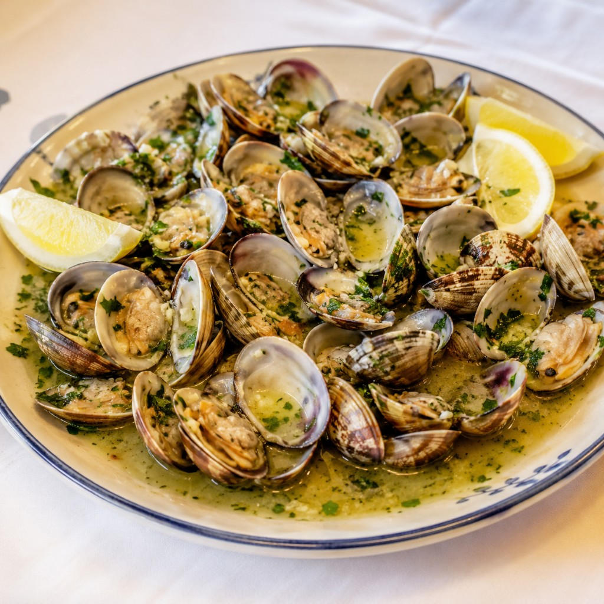
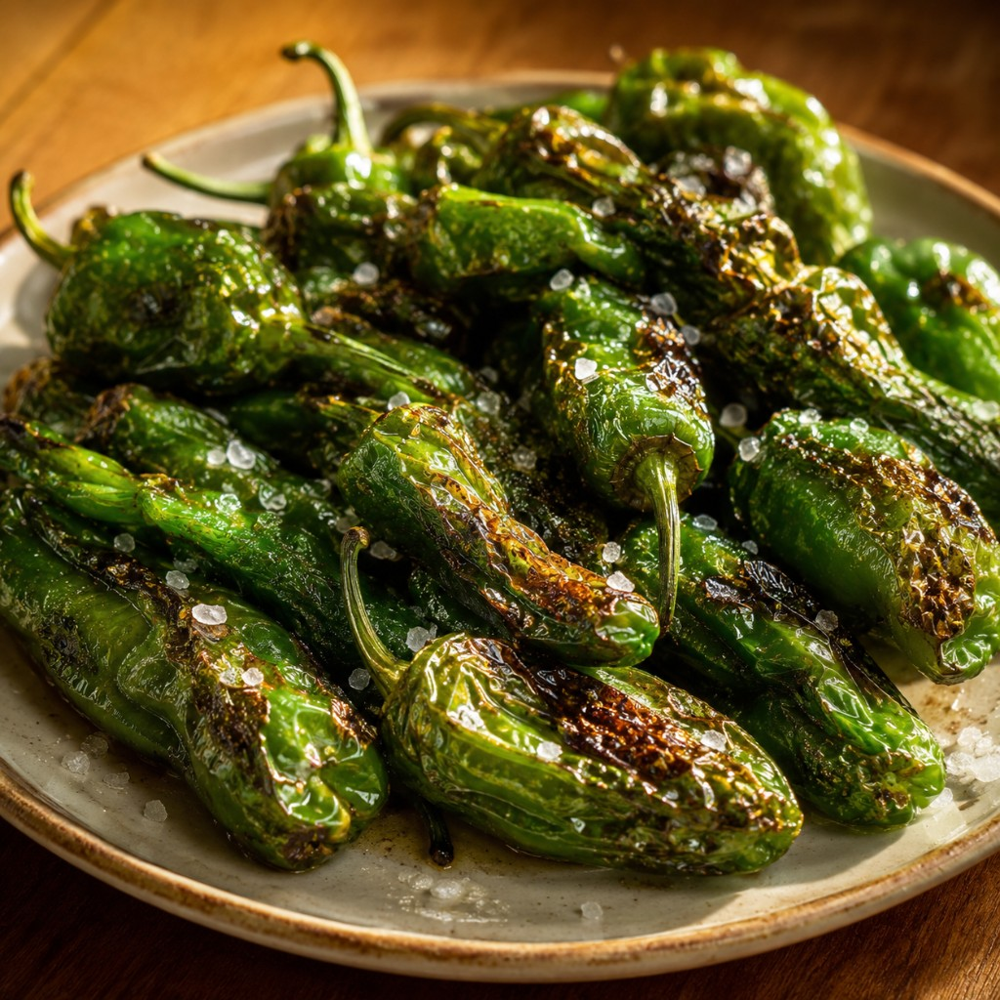
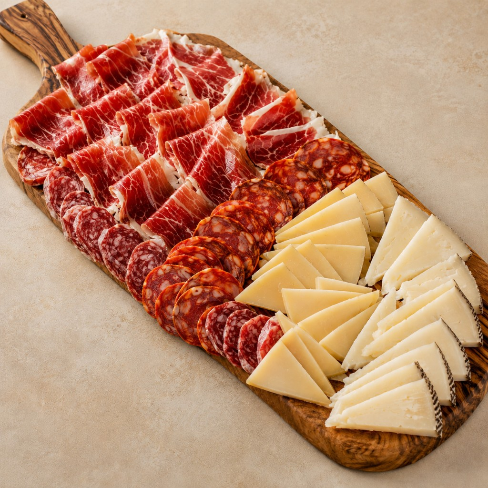

Encontrar comida portuguesa verdadeiramente tradicional está a tornar-se mais difícil a cada ano.
Por toda a Europa, restaurantes de família antigos desaparecem, substituídos por menus internacionais quase idênticos quer estejas em Lisboa, Berlim, Londres ou Amesterdão.
O resultado é conveniente. Mas algo importante perde-se.
As receitas, histórias e sabores com que gerações cresceram desaparecem lentamente do quotidiano.
No Julio's, acreditamos que estas tradições valem a pena manter vivas. Não num museu. Não atrás de vidro. Mas à mesa, exatamente onde pertencem.
A nossa Experiência de Entradas Portuguesas reúne três clássicos que contam a história de Portugal melhor do que qualquer guia.

Amêijoas à Bulhão Pato
O prato que leva o nome de um poeta
Um dos pratos de marisco mais queridos de Portugal leva o nome do poeta do século XIX Raimundo António de Bulhão Pato.
Ninguém sabe ao certo se criou a receita ou se apenas adorava comê-la, mas o seu nome ficou ligado a ela para sempre.
Amêijoas frescas são cozinhadas com azeite, alho e generosas quantidades de coentros — uma erva que os cozinheiros portugueses adoram há séculos, especialmente no sul.
A receita é simples. E é exatamente esse o ponto. A cozinha portuguesa nunca foi sobre esconder ingredientes — é sobre deixar os bons ingredientes falarem por si.
Tradicionalmente coloca-se um cesto de pão por perto, porque deixar o molho para trás seria quase um crime.

Pimentos Padrón
O pequeno jogo português
Estes pequenos pimentos chegaram à Península Ibérica há séculos e tornaram-se companheiros favoritos de longos almoços em família e encontros com amigos.
A maioria é doce. Alguns são surpreendentemente picantes. Ninguém sabe qual vai sair.
«Uns picam, outros não.»
Cada prato torna-se um jogo. Alguém leva sempre o picante. Todos riem.
A tradição sobreviveu gerações porque transforma um simples petisco numa experiência partilhada. E a comida portuguesa sempre foi tanto sobre pessoas como sobre receitas.

Tábua Mista
Um sabor do campo
Antes de Portugal se tornar famoso pelo turismo, a maioria das pessoas vivia muito mais perto da terra.
As famílias criavam animais, curavam carnes, faziam queijos e preservavam comida para os longos invernos. Essas tradições ainda vivem na melhor charcutaria do país.
Uma tábua mista tradicional reúne presunto curado, enchidos regionais e queijos portugueses numa só tábua.
Muitos dos melhores enchidos vêm de porcos ibéricos de raça negra que vagueiam por bosques de sobreiros e se alimentam naturalmente de bolotas.
Este método lento e tradicional cria o sabor rico e a textura delicada que tornaram o presunto ibérico famoso em toda a Europa. Os queijos contam a sua própria história — dezenas de variedades regionais, de queijos de montanha amanteigados a queijos curados firmes feitos com métodos que mudaram pouco ao longo dos séculos.
Experimenta os três juntos
Para visitantes, é uma das formas mais fáceis de descobrir sabores portugueses autênticos. Para locais, é um lembrete de tradições que valem a pena manter.
Experiência de Entradas Portuguesas — 34,99€
Tábua Mista (enchidos, queijos e charcutaria)
Amêijoas à Bulhão Pato
Pimentos Padrón
Porque a melhor forma de compreender Portugal não é lendo sobre ele. É partilhando-o à mesa.